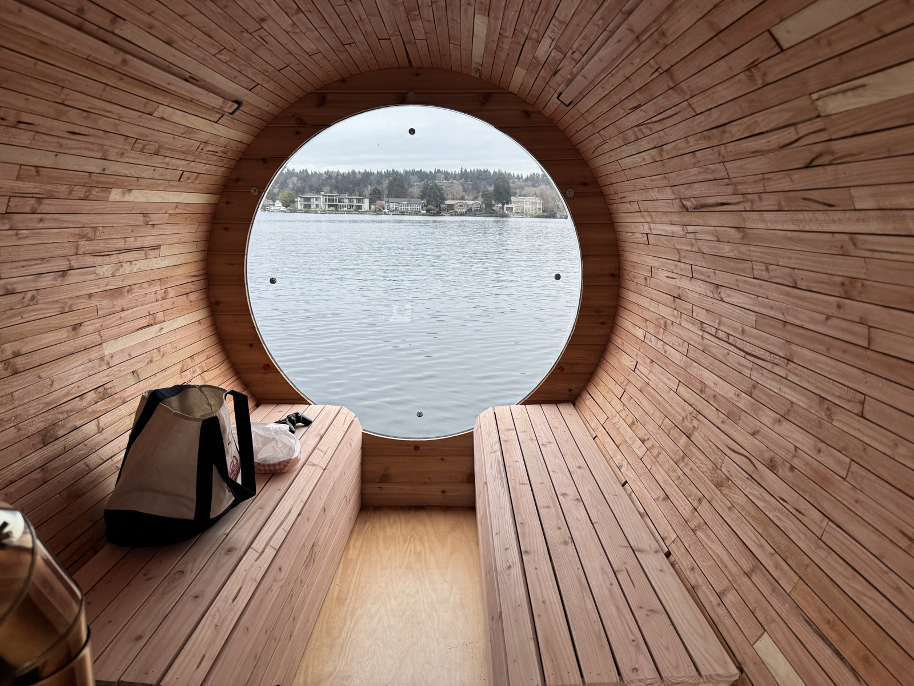

The floating sauna is an experiment in getting together intentionally.
The boat steers itself by GPS on a 1–2 hour loop: time to relax, connect, and, for the brave, swim.
We're still figuring out how the boat works and how we like to use it.
the basics
When & where: We head out at 6:30 pm every Wednesday from the boat ramp at Newport Yacht Basin
(map).
Bring: a swimsuit, sandals, a towel, and water. There isn't much dry inside space on the boat, so less is more.
Plunging: we'll stop somewhere out on the lake to swim. The water is cold.
Weather: if the wind is too much we'll call it, and you'll hear from us by text.

getting there
Three places to park:
Boat ramp lot (paid), right at the top of the ramp.
map
Street parking (free), a short walk up the road.
map
NYBA lot. We might have an extra pass. You can also park there without one if you're feeling lucky:
it's strictly enforced in summer, but in winter nobody seems to care.
map